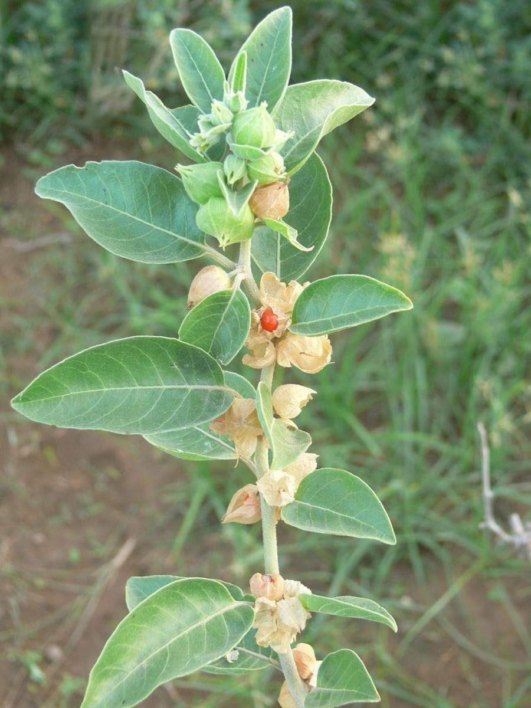
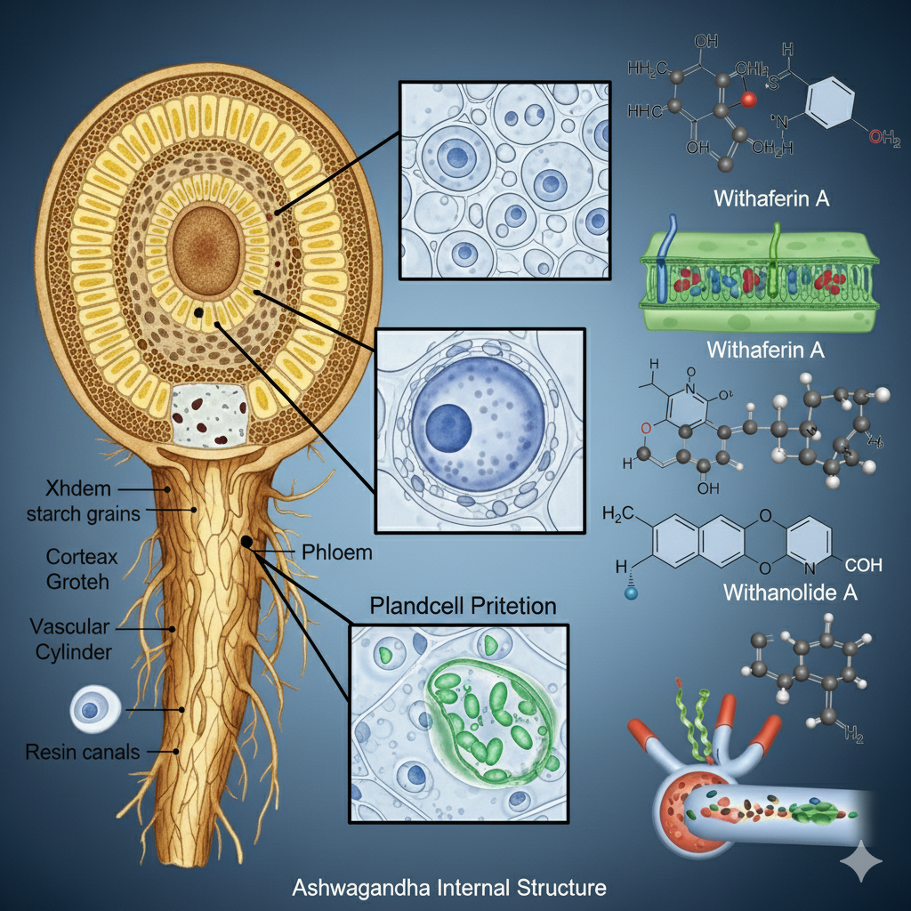
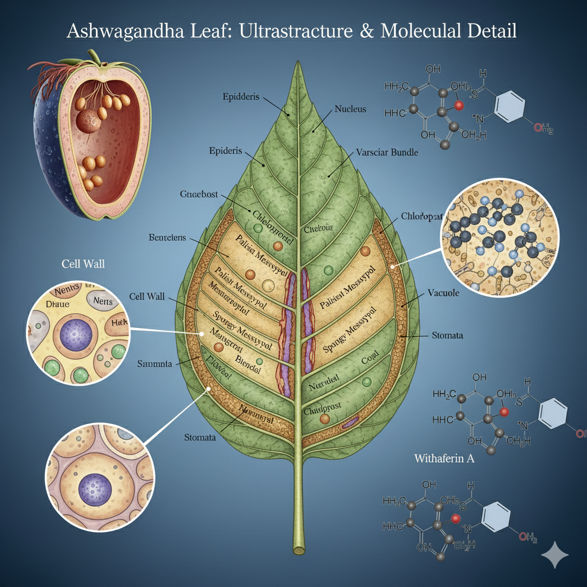

Scientific Name: Withania somnifera
Common Names: Indian Ginseng, Winter Cherry
Family: Solanaceae
Parts Used: Roots, leaves, berries
Medicinal Uses: Adaptogen, rejuvenative, immunity booster.
Benefits: Reduces stress, improves vitality, supports sleep & memory.
Precautions: Avoid in pregnancy; may interact with thyroid or BP medicines.
Rasa: Bitter, astringent, sweet
Guna: Light, unctuous
Virya: Heating
Vipaka: Sweet
Dosha Effect: Balances Vata and Kapha

Parts Used

Ashwagandha Roots
The roots of Ashwagandha are the most important medicinal part, widely used in Ayurveda, Siddha, and modern herbal medicine.
Morphology
- Taproot, stout, fleshy, cylindrical, up to 20–30 cm long.
- Whitish-brown externally, whitish inside.
- Odor: horse-like; Taste: bitter and pungent.
Microscopic Features
- Cork with reddish-brown cells.
- Cortex of parenchymatous cells filled with starch grains and calcium oxalate crystals.
- Xylem vessels with spiral and reticulate thickenings.
- Uniseriate medullary rays connecting cortex and xylem.
Chemical Constituents
Withanolides (Withaferin A, D), alkaloids (somniferine, withanine), saponins, starch, iron, and amino acids.
Medicinal Properties
- Adaptogen and stress reliever.
- Rejuvenative and vitality booster.
- Anti-inflammatory, anti-arthritic, and nervine tonic.
- Improves sleep and immunity.
Uses
Traditionally used as powder (churna) with milk; applied externally for wounds and arthritis; modern extracts used in supplements.

Ashwagandha Leaves
Ashwagandha leaves are bitter in taste and used traditionally for fever, swelling, and infections.
Morphology
- Simple, ovate, 5–10 cm long, green leaves with short petioles.
- Margins entire, surface covered with fine hairs (trichomes).
- Arrangement alternate.
Microscopic Features
- Upper and lower epidermis with anisocytic stomata.
- Mesophyll differentiated into palisade and spongy parenchyma.
- Glandular trichomes secreting withanolides.
- Vascular bundles collateral, xylem above, phloem below.
Chemical Constituents
Rich in withaferin A, flavonoids, tannins, and iron. Leaves contain higher withanolide concentration than roots.
Medicinal Properties
- Antibacterial and antifungal activity.
- Anti-inflammatory and analgesic effect.
- Promotes wound healing when applied externally.
- Used in fever reduction and detoxification therapies.
Uses
Applied as a paste for skin infections, wounds, and swelling; decoction used in traditional medicine for fever and cough; extract used in research for anticancer activity.

Ashwagandha Berries
The berries are orange-red when ripe and are used in Ayurvedic medicine for female reproductive health and as a diuretic.
Morphology
- Globose berries, 5–8 mm in diameter.
- Initially green, ripening to orange-red.
- Each berry enclosed in a persistent papery calyx.
- Contains numerous small, yellow seeds.
Microscopic Features
- Pericarp of parenchymatous cells with pigment granules.
- Seeds with outer testa (seed coat) and endosperm rich in proteins and oils.
- Presence of carotenoid pigments.
Chemical Constituents
Contain withanolides, alkaloids, flavonoids, saponins, and carotenoids (responsible for red-orange color).
Medicinal Properties
- Mild purgative and diuretic effect.
- Antioxidant activity due to carotenoids.
- Supports reproductive health and hormonal balance.
Uses
Berries are used in Siddha and folk medicine as aphrodisiacs, diuretics, and tonics. Seeds are sometimes powdered and used in formulations for vitality and fertility.